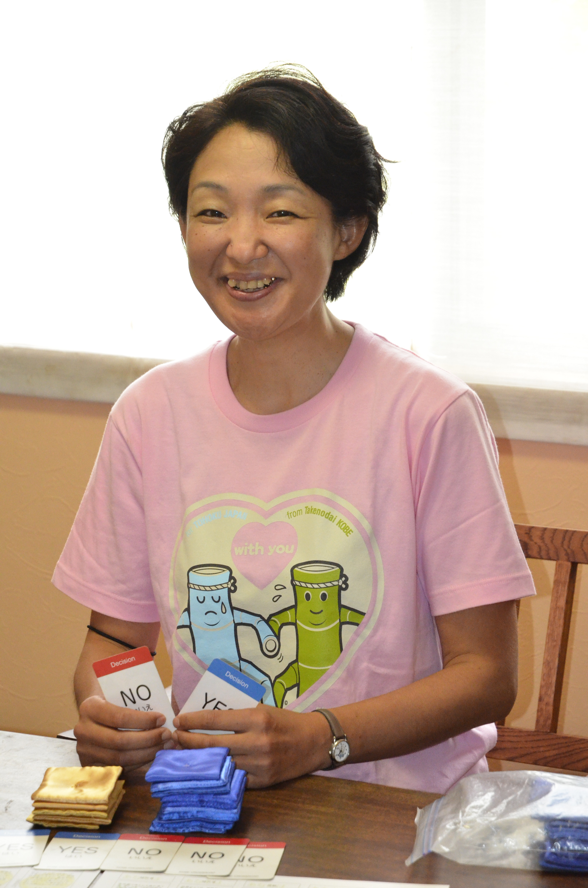

４日（木）
伊藤貞嘉さん |
『世界を目指せ』 東北大学 理事 略歴 昭和29年生 昭和54年 3月 東北大学医学部卒業 昭和54年 5月 宮城県古川市立病院で初期研修 昭和56年 4月 東北大学医学部第二内科入局 昭和57年 5月 米国ミシガン州ヘンリーフォード病院内科 高血圧研究部門 Research Fellow 昭和59年11月 同上より帰国(第二内科在籍) 昭和62年 6月 米国ミシガン州ヘンリーフォード病院内科 高血圧研究部門 Senior Staff 平成 7年 3月 東北大学医学部第二内科講師 平成 9年 8月 東北大学医学部第二内科教授 平成11年 4月 大学院への移行により現職 (内科病態学講座腎・高血圧・内分泌学分野教授) 平成14年～ 治癒センター長(兼務) 平成14年～ 血液浄化療法部長(兼務) 平成17年4月～ 国立大学法人東北大学総長特任補佐 平成20年4月～ 副研究科長、副学部長 平成24年4月～ 東北大学理事(研究・環境安全担当) 平成26年2月～ 東北大学理事(研究担当) 賞罰他(本人受賞分) 昭和63年 8月 New Clinical Investigator Award(ヘンリーフォード病院) 平成 5年 4月 Youg Investigator Award(第一等賞)(南北アメリカ高血圧学会) 平成 5年 5月 Young Scholar Award(アメリカ高血圧学会) 平成 6年 7月 Established Investigator Award(アメリカ心臓協会) 平成 9年 1月 東北大学医学部奨学賞金賞 平成22年 5月 日本腎臓財団学術賞 平成24年10月 ISH-APSH the trustee's lectureship award 平成26年 9月 The 2014 Arthur C.Corcoran Memorial Lecturer award 平成27年 4月 科学技術分野の文部科学大臣表彰「科学技術賞・研究部門) 平成27年 5月 Distinguished Scientist Award （Robert Tigerstedt Award）（アメリカ高血圧学会) 学会各種活動 理事就任歴：日本内科学会、日本腎臓学会、日本高血圧学会、日本内分泌学会、日本心血管内分泌代謝学会、日本肥満治療学会、国際腎臓学会 日本循環器学会(評議員)、アメリカ心臓協会(Fellow) メッセージ 皆さん、世界は広く、いろんな文化があり、そこに人が住んでいます。世界中に多くの仲間を作り、グローバルに活躍しよう。 |
浜尚美さん |
『大災害発生！あなたならどうする？』 神戸クロスロード研究会 代表理事 http://crossroad2014.jimdo.com/ 略歴 1965年生まれ(50歳) 1991年 北海道大学獣医学部卒業 神戸市役所入所(衛生監視員) 1995年 阪神淡路大震災に遭遇 2005年 「神戸クロスロード研究会」設立 2006年 神戸市役所退職 2011年～神戸クロスロード研究会 代表理事 メッセージ 「あなたたちは避難所のリーダー。避難者3000名、食料は2000食。配る？」。災害時は、このような難しい問題について、自ら考え、決断し、行動しなければなりません。防災ゲーム「クロスロード」を使って、そのトレーニングをしてみませんか？ |
５日（金）
《フィールドワーク》 スーパーカミオカンデ・カムランド 見学 |
亀田純さん |
『スーパーカミオカンデ実験とニュートリノ振動の発見』 東京大学宇宙線研究所神岡宇宙素粒子研究施設 助教 略歴 1971年8月7日生まれ 新潟県出身 1996年3月 東京大学 卒業 2001年3月 東京大学大学院理学系研究 卒業 2002年9月 博士号取得(理学) メッセージ 2015年10月にノーベル賞が贈られた「ニュートリノ振動の発見」についてお話ししたいと思います。 神岡の地下1000メートルにある「スーパーカミオカンデ」にてどうやって発見されたのか講義します。 |
| 井上邦雄さん |
東北大学ニュートリノ科学センター長 略歴 学位 理学博士(東京大学)，理学修士(大阪大学) 経歴 2011年-2014年 東北大学 ディスティングイッシュトプロフェッサー 2009年 東北大学ニュートリノ科学研究センター 教授 ニュートリノ科学研究センター長 2008年‐2011年 東北大学 ディスティングイッシュトプロフェッサー 2007年 東京大学数物連携宇宙機構 主任研究員 2004年‐2009年 東北大学大学院理学研究科 教授 ニュートリノ科学研究センター長(2006-) 学歴 1990年 大阪大学 理学系研究科 物理学 1992年 東京大学 理学系研究科 物理学 1988年 大阪大学 理学部 物理 委員歴 2014年 -AstroParticles International Committe 委員 2012年 -PTEP 委員編集 2011年 -東京大学宇宙線研究所将来計画検討委員会 委員 2007年 -SSS飛騨アカデミー評議会 委員 2012年-2015年 JPARC PAC 委員 受賞 2012年 仁科記念賞 2009年 日本学術振興会賞 2013年 戸塚洋二賞 2004年 小柴賞 1999年 朝日賞 |
西館有沙さん
|
『障害のある人が差別されない社会はどう作る？』 富山大学人間発達科学部 准教授 略歴 北海道出身。筑波大学で平成18年度に博士号を取得し、現在は富山大学人間発達科学部の准教授。研究テーマは、バリアフリー、障害理解など。 資格：保育士，社会福祉士 メッセージ 障害のある人の権利を守るために、平成25年に「障害者差別解消法」という法律が新しくできました。この機会に、障害のある人が差別されない社会を作るにはどうしたらよいのか、何が必要かについてじっくり考えてみませんか。 |

６日（土）
仁木康弘さん |
富山高等専門学校一般教養科 助教 学位：修士(体育学) 所属学会：日本体育学会、日本トレーニング科学会 日本水泳・水中運動会 専門分野：身体動作学 |
村上正紀さん
|
『今、サイエンスに何が期待されているか？』 京都大学 名誉教授 学校法人立命館 理事補佐／立命館大学特別招聘研究教授 略歴 昭和41年 京都大学工学部冶金学科 卒業 昭和43年 京都大学大学院工学研究科修士課程冶金学専攻 修了 昭和46年 京都大学大学院工学研究科博士課程冶金学専攻 単位取得満期退学 昭和46年 京都大学工学部 研究生 昭和46年 米国カリフォルニア大学（UCLA） 研究員 昭和50年 米国IBMワトソン研究所 研究員 昭和58年 米国IBMワトソン研究所 薄膜材料部門マネージャー 平成 2年 京都大学工学部 教授 平成 8年 京都大学大学院工学研究科 教授 平成17年 京都大学研究戦略タスクフォースプログラムディレクター 平成19年 京都大学 定年退職 ／ 京都大学 名誉教授 平成19年 学校法人立命館 副総長 ／ 立命館大学グローバルイノベーション機構教授 平成27年 学校法人立命館 理事補佐 ／ 立命館大学特別招聘研究教授 メッセージ これからも地球上の人口は増え続けるが、日本の人口は減少するばかりでなく、地下資源も減り続ける。このような状況でも希望を持てる国になるようにするには、今から君たちには何をするべきか考えて欲しい。 |
| 《ワークショップ》 アルプス薬品工業株式会社 講義・工場等の見学 |
| ミニゼミ 熊崎陽一さん |
７日（日）
| レールマウンテンバイク |
亀山郁夫さん |
『文学とは何か？ドストエフスキーから学ぶ』 名古屋外国語大学 学長 略歴 1949年、栃木県宇都宮市生まれ。名古屋外国語大学学長。ロシア文学者。東京外国語大学卒業、東京大学大学院博士課程単位取得退学。前東京外国語大学学長。現中央教員審議会会員。 2002年に「磔のロシア―スターリンと芸術家たち」で大佛次郎賞、2007年に翻訳「カラマーゾフの兄弟」で毎日出版文化賞特別賞、プーシキン賞を受賞。2012年には「謎解き『悪霊』」で読売文学賞受賞。ドストエフスキーの新訳では、他に「罪と罰」、「悪霊」があり、現在は「白痴」の翻訳に取り組んでいる。 著書は他に、「破滅のマヤコフスキー」、「熱狂とユーフォリア」、「ドストエフスキー 父殺しの文学」、「磔のロシア スターリンと芸術家たち」、「偏愛記」など多数。2015年11月に、自身初となる小説「新カラマーゾフの兄弟」を刊行。 メッセージ よく学び、よく眠れ！ |


{kind=link}